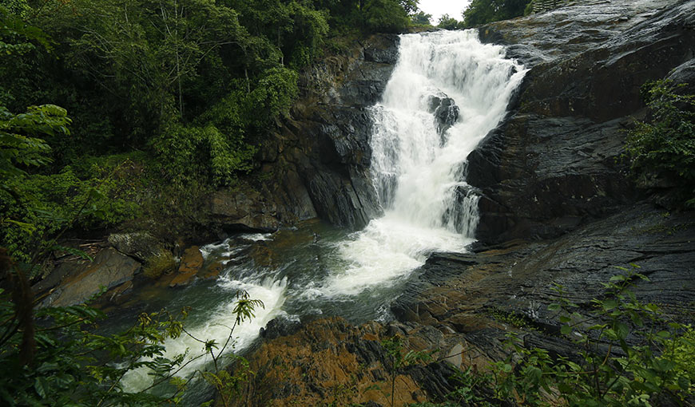

PLACES TO VISIT IN WAYANAD
Muthanga Wildlife Sanctuary
Better known as the Wayanad Wildlife Sanctuary, Muthanga is unique for the colours of the forests that change with the seasons. Bordering the Mudumulai Sanctuary in Tamil Nadu and Nagarhole and Bandipur Sanctuaries in Karnataka, the Wayanad Wildlife Sanctuary is spread over 344 sq kms and is about 16 kms east of Sulthan Bathery in Wayanad. Elephants, spotted deer, gaur, sambar, sloth bear and many varieties of birds and reptiles can be seen here.
Edakkal Caves
The discovery of these spectacular caves was made by Fred Fawcett, the Superintendent of Police who had come to Wayanad on a hunting trip in 1890. Situated 12 km from Sulthan Bathery, these prehistoric shelters are natural rock formations. The caves are situated so high on a cliff, that the trek to the top of the rocks is quite exhausting.
Chembra Peak
The highest peak in Wayanad, the Chembra Peak is 2100 m high. It offers stunning views of the nearby hills and valleys. An ideal place for a trek, the District Tourism Protection Council rents tents, sleeping bags and other trekking gear to interested tourists.
Kuruva Dweep

A 950 acre wooded island, the Kuruva Dweep is situated amidst the Lakkidi River and the Mananthavady Rivulet. DTPC operates bamboo raft rides from Pulpally to the islet. A variety of birds and butterflies can be found on this island.
Pookot Lake

3 km from Vythiri, Pookot Lake is a delightful place surrounded by small wooded hills. One can take a pony or horse ride on the 1.5 km pathway around the lake. A curio shop nearby, sells bamboo and wooden artifacts and hill produce such as spices, tea and honey. The boat club lets you take a ride on row boats and pedal boats.
Soochipara and Kanthampara Falls

These breathtaking waterfalls hit the sharp points of the granite rocks at the base, hence getting its name Soochipara (Soochi meaning needle and Para meaning rock). The drive to these waterfalls is very delightful. A zigzag road through tea plantations, and a path through a rocky terrain leading into a forest, paves way to the roaring waterfalls.
Pakshipathalam
Pakshipathalam is about 7 kms away from Thirunelli and trekking is the only mode of reaching this place. Pakshipathalam, is a picturesque sleepy little place. Pakshipathalam – as the name suggests, has a large population of birds. Here virgin forests, rivulets and steep hills together offer challenging avenues for trekking. A cave which rishis (saints) are believed to have used for meditation in ancient times, has become a major attraction for tourists.
Lakkidi's Chain Tree
Lakkidi is not just famous for its spectacular landscape but also for the Chained Tree which has a very intriguing tale to it. It is believed that a British engineer could not find his way out of the dense forest in Vythiri and so sought the help of a tribal called Karinthandan who successfully led him out of the forest. Unwilling to share the credit of this discovery with the tribal, the engineer killed him. Karinthandan’s spirit haunted Lakkidi and troubled its visitors till a priest chained it to a tree. The tree with heavy chains placed around its branches confirms this lore.
Tholpetty Wildlife Sanctuary
This is a popular wildlife sanctuary in Wayanad. Camping out at night in the watch tower in this sanctuary is a memorable lifetime experience - for any adventure sports loving patrons. The watch tower is just above the lake, which is the only source of water to all animals. All animals come here to drink water at night. Trekking, rock climbing or camping out at nights are activities you can indulge in while you are here.